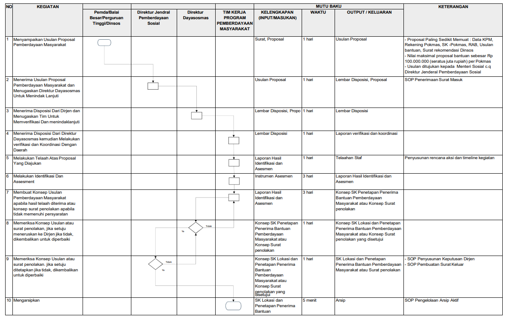

Pengusulan dan Penetapan
Alur penerimaan proposal bantuan pemberdayaan, verifikasi dan asesmen, sampai terbit SK penetapan penerima bantuan atau surat penolakan.
Deskripsi SOP
SOP Pengusulan dan Penetapan mengatur seleksi proposal bantuan pemberdayaan dari masyarakat, mulai dari proposal diterima sampai terbit SK Lokasi dan Penetapan Penerima Bantuan atau surat penolakan.
Proposal diajukan oleh Pemda, balai besar, perguruan tinggi, atau dinsos kepada Menteri Sosial c.q. Direktur Jenderal Pemberdayaan Sosial, dengan nilai paling banyak Rp100.000.000 per Pokmas. Dirjen mendisposisikan proposal kepada Direktur Dayasosmas, lalu Tim Kerja melakukan verifikasi, identifikasi, asesmen, dan telaah. Konsep SK atau surat penolakan diperiksa Direktur Dayasosmas, ditetapkan oleh Dirjen, dan kemudian diarsipkan.
Pihak yang terlibat
- Pemda / Balai Besar / Perguruan Tinggi / Dinsos
- Direktur Jenderal Pemberdayaan Sosial
- Direktur Dayasosmas
- Tim Kerja Program Pemberdayaan Masyarakat
Kualifikasi pelaksana
- Memahami pemberdayaan
- Memiliki kemampuan komunikasi publik
- Memahami kebijakan dan petunjuk teknis pemberdayaan
- Mampu melakukan koordinasi
Terkait dengan SOP
- SOP Pembuatan Surat Keluar
- SOP Pencairan Anggaran
- SOP Penanganan Arsip Aktif
Flowchart

Tahapan kegiatan
Menyampaikan usulan proposal pemberdayaan masyarakat
Pemda / Balai Besar / Perguruan Tinggi / Dinsos
Surat, proposal
1 hari
Usulan proposal
Proposal paling sedikit memuat data KPM, rekening Pokmas, SK Pokmas, RAB, usulan bantuan, dan surat rekomendasi Dinsos. Nilai maksimal Rp100.000.000 per Pokmas. Usulan ditujukan kepada Menteri Sosial c.q. Direktur Jenderal Pemberdayaan Sosial.
Menerima usulan proposal dan menugaskan Direktur Dayasosmas untuk menindaklanjuti
Direktur Jenderal Pemberdayaan Sosial
Usulan proposal
1 hari
Lembar disposisi, proposal
Lihat SOP Penerimaan Surat Masuk.
Menerima disposisi dari Dirjen dan menugaskan tim untuk memverifikasi dan menindaklanjuti
Direktur Dayasosmas
Lembar disposisi, proposal
1 hari
Lembar disposisi
Menerima disposisi, lalu melakukan verifikasi dan koordinasi dengan daerah
Tim Kerja
Lembar disposisi
1 hari
Laporan verifikasi dan koordinasi
Melakukan telaah atas proposal yang diajukan
Tim Kerja
Laporan hasil identifikasi dan asesmen
1 hari
Telaahan staf
Dilanjutkan dengan penyusunan rencana aksi dan timeline kegiatan.
Melakukan identifikasi dan asesmen
Tim Kerja
Instrumen asesmen
3 hari
Laporan hasil identifikasi dan asesmen
Membuat konsep SK penetapan penerima bantuan jika hasil telaah diterima, atau konsep surat penolakan jika tidak memenuhi persyaratan
Tim Kerja
Laporan hasil identifikasi dan asesmen
3 hari
Konsep SK Penetapan Penerima Bantuan Pemberdayaan Masyarakat atau konsep surat penolakan
Memeriksa konsep usulan atau surat penolakan
Direktur Dayasosmas
Konsep SK Penetapan atau konsep surat penolakan
1 hari
Konsep SK Lokasi dan Penetapan Penerima Bantuan atau konsep surat penolakan yang disetujui
Jika setuju, diteruskan ke Dirjen. Jika tidak, dikembalikan untuk diperbaiki.
Memeriksa konsep usulan atau surat penolakan, lalu menetapkan
Direktur Jenderal Pemberdayaan Sosial
Konsep SK Lokasi dan Penetapan atau surat penolakan yang disetujui
1 hari
SK Lokasi dan Penetapan Penerima Bantuan Pemberdayaan Masyarakat atau surat penolakan
Jika tidak setuju, dikembalikan untuk diperbaiki. Lihat SOP Penyusunan Keputusan Dirjen dan SOP Pembuatan Surat Keluar.
Mengarsipkan
Tim Kerja
SK Lokasi dan Penetapan Penerima Bantuan
5 menit
Arsip
Lihat SOP Pengelolaan Arsip Aktif.